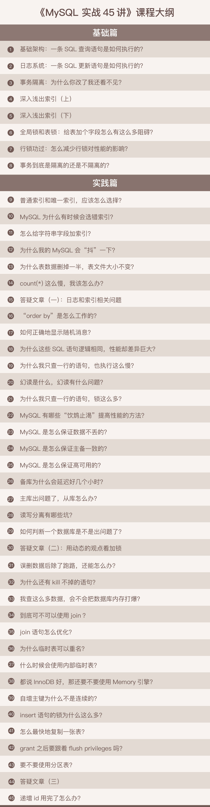

- 00 开篇词 这一次，让我们一起来搞懂MySQL.md.html
- 01 基础架构：一条SQL查询语句是如何执行的？.md.html
- 02 日志系统：一条SQL更新语句是如何执行的？.md.html
- 03 事务隔离：为什么你改了我还看不见？.md.html
- 04 深入浅出索引（上）.md.html
- 05 深入浅出索引（下）.md.html
- 06 全局锁和表锁 ：给表加个字段怎么有这么多阻碍？.md.html
- 07 行锁功过：怎么减少行锁对性能的影响？.md.html
- 08 事务到底是隔离的还是不隔离的？.md.html
- 09 普通索引和唯一索引，应该怎么选择？.md.html
- 10 MySQL为什么有时候会选错索引？.md.html
- 11 怎么给字符串字段加索引？.md.html
- 12 为什么我的MySQL会“抖”一下？.md.html
- 13 为什么表数据删掉一半，表文件大小不变？.md.html
- 14 count()这么慢，我该怎么办？.md.html
- 15 答疑文章（一）：日志和索引相关问题.md.html
- 16 “order by”是怎么工作的？.md.html
- 17 如何正确地显示随机消息？.md.html
- 18 为什么这些SQL语句逻辑相同，性能却差异巨大？.md.html
- 19 为什么我只查一行的语句，也执行这么慢？.md.html
- 20 幻读是什么，幻读有什么问题？.md.html
- 21 为什么我只改一行的语句，锁这么多？.md.html
- 22 MySQL有哪些“饮鸩止渴”提高性能的方法？.md.html
- 23 MySQL是怎么保证数据不丢的？.md.html
- 24 MySQL是怎么保证主备一致的？.md.html
- 25 MySQL是怎么保证高可用的？.md.html
- 26 备库为什么会延迟好几个小时？.md.html
- 27 主库出问题了，从库怎么办？.md.html
- 28 读写分离有哪些坑？.md.html
- 29 如何判断一个数据库是不是出问题了？.md.html
- 30 答疑文章（二）：用动态的观点看加锁.md.html
- 31 误删数据后除了跑路，还能怎么办？.md.html
- 32 为什么还有kill不掉的语句？.md.html
- 33 我查这么多数据，会不会把数据库内存打爆？.md.html
- 34 到底可不可以使用join？.md.html
- 35 join语句怎么优化？.md.html
- 36 为什么临时表可以重名？.md.html
- 37 什么时候会使用内部临时表？.md.html
- 38 都说InnoDB好，那还要不要使用Memory引擎？.md.html
- 39 自增主键为什么不是连续的？.md.html
- 40 insert语句的锁为什么这么多？.md.html
- 41 怎么最快地复制一张表？.md.html
- 42 grant之后要跟着flush privileges吗？.md.html
- 43 要不要使用分区表？.md.html
- 44 答疑文章（三）：说一说这些好问题.md.html
- 45 自增id用完怎么办？.md.html
- 我的MySQL心路历程.md.html
- 结束语 点线网面，一起构建MySQL知识网络.md.html
- 捐赠
00 开篇词 这一次，让我们一起来搞懂MySQL
你好，我是林晓斌，网名“丁奇”，欢迎加入我的专栏，和我一起开始 MySQL 学习之旅。我曾先后在百度和阿里任职，从事 MySQL 数据库方面的工作，一步步地从一个数据库小白成为 MySQL 内核开发人员。回想起来，从我第一次带着疑问翻 MySQL 的源码查到答案至今，已经有十个年头了。在这个过程中，走了不少弯路，但同时也收获了很多的知识和思考，希望能在这个专栏里分享给你。
记得刚开始接触 MySQL，是我在百度贴吧做权限系统的时候。我们遇到了一个奇怪的问题，一个正常 10 毫秒就能完成的 SQL 查询请求偶尔要执行 100 多毫秒才结束。当时主管问我是什么原因，我其实也搞不清楚，就上网查答案，但怎么找都找不到，又脸皮薄不想说自己不知道，只好硬着头皮翻源码。后来遇到了越来越多的问题，也是类似的情景，所以我逐步养成了通过分析源码理解原理的习惯。
当时，我自己的感觉是，即使我只是一个开发工程师，只是 MySQL 的用户，在了解了一个个系统模块的原理后，再来使用它，感觉是完全不一样的。当在代码里写下一行数据库命令的时候，我就能想到它在数据库端将怎么执行，它的性能是怎么样的，怎样写能让我的应用程序访问数据库的性能最高。进一步，哪些数据处理让数据库系统来做性能会更好，哪些数据处理在缓存里做性能会更好，我心里也会更清楚。在建表和建索引的时候，我也会更有意识地为将来的查询优化做综合考虑，比如确定是否使用递增主键、主键的列怎样选择，等等。
但随后我又有了一个新的困惑，我觉得自己了解的 MySQL 知识点是零散的，没有形成网络。于是解决完一个问题后，很容易忘记。再碰到类似的问题，我又得再翻一次代码。
所幸在阿里工作的时候，我参与了阿里云关系型数据库服务内核的开发，并且负责开发开源分支 AliSQL，让我对 MySQL 内核和源码有了更深层次的研究和理解。在服务内部客户和公有云客户的过程中，我有机会面对和解决足够多的问题，再通过手册进行系统的学习，算是比较坎坷地将 MySQL 的知识网络补了起来。
所以，在回顾这个过程的时候，我的第一个感受是，如果一开始就有一些从理论到实战的系统性指导，那该多好啊，也许我可以学习得更快些。
在极客时间团队跟我联系策划这个专栏的时候，我还是持怀疑态度的。为什么呢？现在不比当年了，犹记得十余年前，你使用 MySQL 的过程中碰到问题的话，基本上都只能到代码里去找答案，因为那时网上的资料太少了。
而近十年来，MySQL 在中国广泛普及，技术分享文章可以说是浩如烟海。所以，现在要系统地介绍一遍 MySQL 的话，恐怕里面提及的大多数知识点，都可以在社区文章中找到。那么我们做这个专栏的意义在哪里，而它又凭什么可以收费呢？
直到收到极客时间团队的答复，我才开始对这个专栏“想做和可以做”的事情感觉清晰起来。数据库是一个综合系统，其背后是发展了几十年的数据库理论。同时，数据库系统也是一个应用系统，可能一个业务开发人员用了两三年 MySQL，还未必清楚那些自己一直在用的“最佳实践”为什么是最佳的。
于是，我希望这个专栏能够帮助这样的一些开发者：他们正在使用 MySQL，知道如何写出逻辑正确的 SQL 语句来实现业务目标，却不确定这个语句是不是最优的；他们听说了一些使用数据库的最佳实践，但是更想了解为什么这么做；他们使用的数据库偶尔会出问题，亟需了解如何更快速、更准确地定位问题，甚至自己解决问题……
在过去的七年里，我带过十几个应届毕业生，看着他们成长，要求他们原理先行，再实践验证。几年下来，他们的成长速度都很快，其中好几个毕业没两年就成为团队的骨干力量了。我也在社招的时候面试过很多有着不错的运维实践经验和能力的候选人，但都因为对数据库原理仅有一知半解的了解，而最终遗憾地没有通过面试。
因此，我希望这个专栏能够激发开发者对数据库原理的探索欲，从而更好地理解工作中遇到的问题，更能知道背后的为什么。所以我会选那些平时使用数据库时高频出现的知识，如事务、索引、锁等内容构成专栏的主线。这些主线上是一个个的知识点。每个点就是一个概念、一个机制或者一个原理说明。在每个说明之后，我会和你讨论一个实践相关的问题。
希望能以这样的方式，让你对 MySQL 的几条主线有一个整体的认识，并且了解基本概念。在之后的实践篇中，我会引用到这些主线的知识背景，并着力说明它们是怎样指导实践的。这样，你可以从点到线，再到面，形成自己的 MySQL 知识网络。
在这里，有一份目录，你也可以先了解下整个专栏的知识结构。

如前面说的，这几条主线上的每个知识点几乎都不是最新的，有些甚至十年前就这样，并没有改过。但我希望针对这些点的说明，可以让你在使用 MySQL 时心里更有底，知道怎么做选择，并且明白为什么。了解了原理，才能在实践中不断创新，提升个人的价值和工作输出。
© 2019 - 2023 Liangliang Lee. Powered by gin and hexo-theme-book.